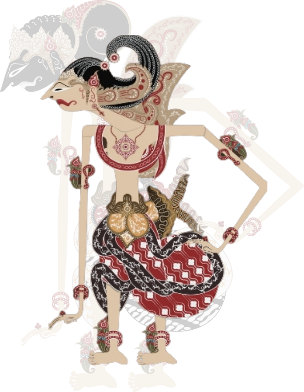

This Is Yudhistira

Yudistira adalah salah satu karakter utama dalam epos Mahabharata, yang dikenal sebagai simbol kebijaksanaan, keadilan, dan kepemimpinan. Berikut adalah beberapa karakteristik penting dari Yudistira:
Kebijaksanaan
Yudistira dikenal sebagai sosok yang bijaksana dan selalu berpikir matang sebelum mengambil keputusan. Dia sering mencari nasihat dari orang lain dan mempertimbangkan segala aspek sebelum bertindak.
Keadlian
Dia sangat menghargai keadilan dan selalu berusaha untuk berlaku adil dalam setiap situasi. Yudistira berusaha untuk memenuhi kewajibannya sebagai raja dan pemimpin, memastikan bahwa semua orang diperlakukan dengan adil.
Kesetiaan
Yudistira sangat setia kepada keluarganya dan teman-temannya. Dia menghormati hubungan darah dan berusaha untuk menjaga ikatan keluarga, meskipun dalam situasi yang sulit.
Karakter Yudistira menjadi teladan bagi banyak orang karena kebijaksanaan dan integritasnya, menjadikannya salah satu tokoh yang paling dihormati dalam tradisional budaya India.